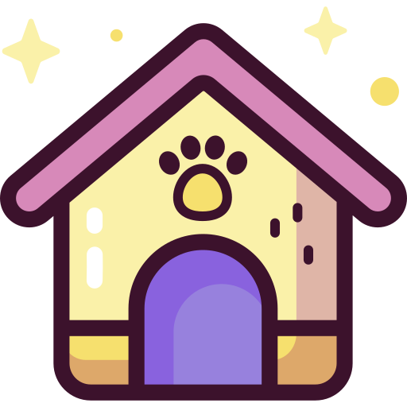
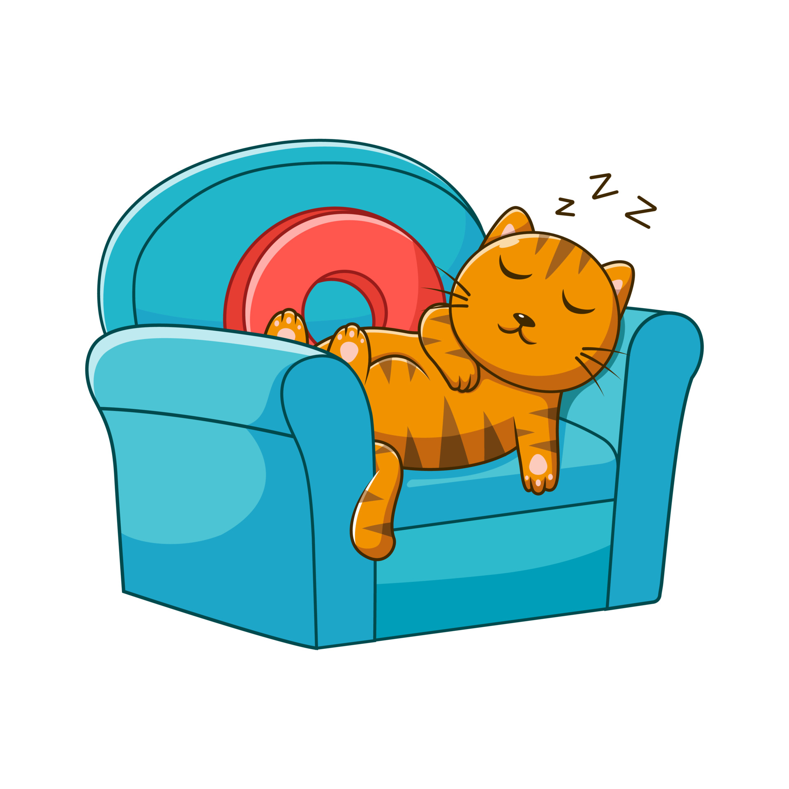
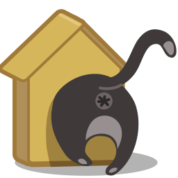

טיפים
דברים שצריך לדעת לפני אימוץ
איפה אפשר לאמץ?
 המקומות הנפוצים ביותר הם צער בעלי חיים וקבוצות הפייסבוק השונות לחתולים. שם תמצאו גורים בני פחות משבועיים, חתולים בוגרים וגם חתולים מבוגרים.
כל מה שנשאר זה לבחור לאיזה חתול התחברתם וליצור קשר על מנת להשלים את האימוץ.
המקומות הנפוצים ביותר הם צער בעלי חיים וקבוצות הפייסבוק השונות לחתולים. שם תמצאו גורים בני פחות משבועיים, חתולים בוגרים וגם חתולים מבוגרים.
כל מה שנשאר זה לבחור לאיזה חתול התחברתם וליצור קשר על מנת להשלים את האימוץ.
כמה זמן חתולים חיים?
חתולים חיים בממוצע בין 16-12 שנה, אך ישנם חתולים שחיים גם מעל ל20 שנה. בימינו בזכות טיפול ווטרינרי ותזונה רפואית החתולים נהנים מתוחלת חיים גבוהה אך על מנת לאפשר להם גם איכות חיים גבוהה, יש להקפיד שישתו הרבה מים, יבצעו פעילות גופנית ויאכלו אוכל איכותי מומלץ ומזין.
אל תסירו להם את הציפורניים
 הניתוח כולל הסרה של קצות האצבעות של החתול בו גדלות הציפורניים והוא הליך כואב. יש דרכים טובות יותר להשתלט על הצורך של החתול לשרוט דברים כמו מתקני גירוד, קטנים, צעצועים ועוד.
יש לקצוץ לחתול את הציפורניים על בסיס קבוע בעזרת קוצץ על מנת שלא יתארכו יתר על המידה.
הניתוח כולל הסרה של קצות האצבעות של החתול בו גדלות הציפורניים והוא הליך כואב. יש דרכים טובות יותר להשתלט על הצורך של החתול לשרוט דברים כמו מתקני גירוד, קטנים, צעצועים ועוד.
יש לקצוץ לחתול את הציפורניים על בסיס קבוע בעזרת קוצץ על מנת שלא יתארכו יתר על המידה.
חתולי רחוב וחתולים נטושים היא תופעה מאוד נפוצה ולכן מומלץ לסרס או לעקר את החתולים
 חתולות יכולות להמליט עד 3 פעמים בשנה! חתולים מסורסים בממוצע חיים יותר וסובלים מפחות בעיות רפואיות (למעט חסימה בדרכי השתן).
נקבות לא מסורסות עלולות לסבול מעטינים מוגדלים, סרטן בעטינים וזיהומים ברחם.
חתולות יכולות להמליט עד 3 פעמים בשנה! חתולים מסורסים בממוצע חיים יותר וסובלים מפחות בעיות רפואיות (למעט חסימה בדרכי השתן).
נקבות לא מסורסות עלולות לסבול מעטינים מוגדלים, סרטן בעטינים וזיהומים ברחם.
תנו לחתול את הזמן להתרגל לבית החדש
לרוב לחתול יקח בין שבוע לשבועיים להתרגל לביתם החדש, בזמן זה תתחיל להירקם מערכת היחסים ביניכם ותבססו את האמון שלו בכם. בתקופה זו תנו לחתול את המרחב האישי שלו ובמידה וניתן, הפגישו אותו עם כל דייר בבית בנפרד, ותנו לו את הזמן לרחרח ולהכיר כל אחד מהם.
החתול זקוק לאזור המיועד רק לו
 החתול צריך חלק בבית או חדר נפרד בו הוא יכול לנוח בשקט ולהתגרד בנחת בלי הפרעות.
במידה ויש לכם חיות מחמד נוספות, הקפידו לחשוף אותם לחתול בהדרגה.
החתול צריך חלק בבית או חדר נפרד בו הוא יכול לנוח בשקט ולהתגרד בנחת בלי הפרעות.
במידה ויש לכם חיות מחמד נוספות, הקפידו לחשוף אותם לחתול בהדרגה.
דברים שכדאי לדעת במעבר דירה
הגיע יום מעבר הדירה ואתם מתרגשים ולחוצים לקראת הבית החדש, אך איך מעבירים את החוויה הזו לחתולינו בצורה הטובה ביותר? כתבה זו תעזור לכם לעשות את המעבר חלק ככל הניתן. חתולים שונאים שינויים, ויוצרים קשר חזק מאוד עם סביבתם. עקב כך, מעברי דירה הם גורם שיכול לגרום ללחץ גדול מאוד לחתול הממוצע, וטומנים בחובם סכנות שונות החל מטראומה קלה ועד בריחה. תכנון מראש יקל על החתול ועליכם בזמן המעבר.
יום המעבר
מטרתנו בזמן המעבר היא למנוע מהחתול לחץ, החל מהמעבירים המסתובבים בבית ומזיזים רהיטים, וכלה בסביבה מוכרת ומנחמת ככל הניתן בבית החדש. לפני המעבר מומלץ להזיז את החתול לחדר אחד סגור ומוכר כמו למשל חדר השינה. נשים איתו את המנשא שלו, ארגז החול וקערת השתייה ונוודא שהדלת סגורה ונעולה (מומלץ לשים שלט כדי ששאר בני הבית והמובילים לא יכנסו בטעות). מומלץ להכין את המנשא מראש ולשים מגבת או שמיכה עם ריח מוכר שירגיע את החתול ואולי כמה צעצועים. כאשר כל החדרים האחרים נארזו ורוקנו נכניס את החתול למנשא ונעביר אותו לאוטו ומשם – לבית החדש.
הנסיעה
נסיעה באוטו היא דבר מלחיץ לרוב החתולים, ויכולה לגרום לבחילות - וודא שחתולך לא אוכל בטווח של 3 שעות לפני הנסיעה. אם חתולך מאוד לחוץ בזמן נסיעה, מומלץ לפנות לווטרינר אשר ייתן לך עצות ואולי אף כדור הרגעה במקרים קשים. מומלץ בחום להעביר את החתול בתוך מנשא או כלוב שכן יש אפשרות שישתולל בתוך האוטו בצורה שתסכן אתכם ואותו. יש לשים את הכלוב במושב נפרד, ולחברו לחגורת הבטיחות (ישנם כלובים ובהם חריצים המותאמים לכך). אין להעביר את החתול בתא המטען או במשאית/טנדר של המובילים!
הגעה לבית החדש
כשמגיעים לבית החדש רצוי לפרוק קודם את החדר בו השארנו את החתול בזמן האריזה. כאשר החדר מוכן נשים בו את החתול עם מים, אוכל, ארגז החול והמנשא (כדי שיוכל לסגת לשם אם הוא בלחץ). יש לוודא שכל החלונות בבית סגורים! רצוי להשאיר את החתול עם אחד מבני הבית החדר הסגור כדי שירגיש בטוח לחקור את החדר החדש. מומלץ להגביל את החתול בתחילה ולא לתת לו לחקור את שאר הבית במהרה מאחר ויעבור עוד זמן עד שהסביבה החדשה תיקלט אצלו כבטוחה. חשוב להתנהג בצורה רגועה ככל האפשר כדי לשדר לחתול שאין סיבה ללחץ.
התיישבות בבית החדש
 כשהחתול מגיע לבית החדש הוא אינו מבין כמונו שזוהי הטריטוריה שלו, ולכן ייתכן מאוד שהוא ינסה לברוח ולחזור למקום הישן (אפילו חתולים שנראים שאינם מסוגלים לכך עלולים להפתיע). בכדי למנוע זאת מומלץ מאוד להשאיר את החתול סגור בבית לפחות למשך ארבעה שבועות ולהגביל אותו מתנועה למקומות שעלולים להוביל אותו החוצה. יש לנסות ולשמר את שיגרת החיים של החתול מהבית הישן – אותם שעות האכלה, מקום דומה לארגז החול, שעות משחק וחשיבה ליושבי הבית. כל אלו יעזרו לו להבין ולהתרגל למצב החדש מהר יותר. יש לעקוב אחרי כל התפתחות בזהירות שכן הסביבה חדשה יכולה להלחיץ את החתול
שינויים באיכות החיים

אין זה מומלץ לנסות לגרום לחתול שרגיל לחיות בחוץ לחיות בתוך הבית בלבד, אך לפעמים זהו הכרח המציאות במקרה של מחלה שדורשת השגחה או שינוי בסוג המגורים של הבעלים. חתולים החיים בבית מצריכים מאמץ מיוחד מצד הבעלים שיפעיל אותם להפגת שעמום ומניעת השמנה.
מספר הצעות לבעלי חתולי בית:
- פיזור והחבאת מזון יבש ברחבי הבית כדי לספק 'צייד' לחתול
- סיפוק מקומות גבוהים פנויים אשר אליהם החתול יוכל לטפס ולהשקיף על הבית
- עמוד או מתקן גירוד להשחזת הציפורניים והוצאת מרץ
- זמן משחק פעם ביום בעזרת חוטים, סמן לייזר או צעצועים המיועדים לכך
לעיתים ישנה הזדמנות לבעלי חתולים לאפשר לחתול שחי בבית בעבר לצאת החוצה (במעבר מדירה לבית עם גינה למשל). אם נעשה בעדינות, המעבר מחתול שחי בבית לחתול שחי גם בחוץ יעשיר את חייו של החתול ויאפשר לו חיים טבעיים יותר. עקוב אחרי ההוראות שצורפו להלן ליציאה החוצה, אך זכור שהתהליך יכול להיות מאוד הדרגתי, וישנם חתולים שלעולם לא יעזו לצאת ללא נוכחות הבעלים.
מעבר לבית קטן יותר
 אם הינך בעלים של יותר מחתול אחד המעבר למגורים מצומצמים יותר עלול לגרום למתח ביניהם כאשר הטריטוריה נקבעת מחדש. הגבל את הסיכון בעזרת סיפוק התנאים הבאים:
- מיטות חתולים נפרדות
- ארגזי חול בכמות מספקת, המפוזרים במקומות שונים ומבודדים
- עמודי גירוד וצעצועים
- קערות מים ומזון נפרדות ולא משותפות
- מקומות גבוהים לטיפוס
- מקומות מחבוא שונים (מתחת למיטה, בתוך ארון וכו')
מעבר דירה היא תקופה מלחיצה לכולנו, בני אדם וחתולים גם יחד. על ידי מודעות, מתן תנאים ועזרה לחתול ניתן לרכך את המעבר, למנוע בעיות ולחץ מיותר, וליצור הרמוניה בבית החדש במהרה. אנו מהמרכז הווטרינרי מאחלים לכם בהצלחה בביתכם החדש!